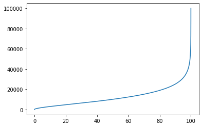

<?xml version="1.0" encoding="utf-8"?>
<!DOCTYPE html PUBLIC "-//W3C//DTD XHTML 1.0 Strict//EN"
"http://www.w3.org/TR/xhtml1/DTD/xhtml1-strict.dtd">
<html xmlns="http://www.w3.org/1999/xhtml" lang="en" xml:lang="en">
<head>
<!-- 2023-02-28 mar. 11:22 -->
<meta http-equiv="Content-Type" content="text/html;charset=utf-8" />
<meta name="viewport" content="width=device-width, initial-scale=1" />
<title>Structure Thermique de l'atmopshère</title>
<meta name="generator" content="Org mode" />
<meta name="author" content="Thomas Lebrat" />
<link rel="stylesheet" type="text/css" href="https://fniessen.github.io/org-html-themes/src/bigblow_theme/css/htmlize.css"/>
<link rel="stylesheet" type="text/css" href="https://fniessen.github.io/org-html-themes/src/bigblow_theme/css/bigblow.css"/>
<link rel="stylesheet" type="text/css" href="https://fniessen.github.io/org-html-themes/src/bigblow_theme/css/hideshow.css"/>
<script type="text/javascript" src="https://fniessen.github.io/org-html-themes/src/bigblow_theme/js/jquery-1.11.0.min.js"></script>
<script type="text/javascript" src="https://fniessen.github.io/org-html-themes/src/bigblow_theme/js/jquery-ui-1.10.2.min.js"></script>
<script type="text/javascript" src="https://fniessen.github.io/org-html-themes/src/bigblow_theme/js/jquery.localscroll-min.js"></script>
<script type="text/javascript" src="https://fniessen.github.io/org-html-themes/src/bigblow_theme/js/jquery.scrollTo-1.4.3.1-min.js"></script>
<script type="text/javascript" src="https://fniessen.github.io/org-html-themes/src/bigblow_theme/js/jquery.zclip.min.js"></script>
<script type="text/javascript" src="https://fniessen.github.io/org-html-themes/src/bigblow_theme/js/bigblow.js"></script>
<script type="text/javascript" src="https://fniessen.github.io/org-html-themes/src/bigblow_theme/js/hideshow.js"></script>
<script type="text/javascript" src="https://fniessen.github.io/org-html-themes/src/lib/js/jquery.stickytableheaders.min.js"></script>
<script type="text/javascript">
/*
@licstart  The following is the entire license notice for the
JavaScript code in this tag.

Copyright (C) 2012-2019 Free Software Foundation, Inc.

The JavaScript code in this tag is free software: you can
redistribute it and/or modify it under the terms of the GNU
General Public License (GNU GPL) as published by the Free Software
Foundation, either version 3 of the License, or (at your option)
any later version.  The code is distributed WITHOUT ANY WARRANTY;
without even the implied warranty of MERCHANTABILITY or FITNESS
FOR A PARTICULAR PURPOSE.  See the GNU GPL for more details.

As additional permission under GNU GPL version 3 section 7, you
may distribute non-source (e.g., minimized or compacted) forms of
that code without the copy of the GNU GPL normally required by
section 4, provided you include this license notice and a URL
through which recipients can access the Corresponding Source.


@licend  The above is the entire license notice
for the JavaScript code in this tag.
*/
<!--/*--><![CDATA[/*><!--*/
 function CodeHighlightOn(elem, id)
 {
   var target = document.getElementById(id);
   if(null != target) {
     elem.cacheClassElem = elem.className;
     elem.cacheClassTarget = target.className;
     target.className = "code-highlighted";
     elem.className   = "code-highlighted";
   }
 }
 function CodeHighlightOff(elem, id)
 {
   var target = document.getElementById(id);
   if(elem.cacheClassElem)
     elem.className = elem.cacheClassElem;
   if(elem.cacheClassTarget)
     target.className = elem.cacheClassTarget;
 }
/*]]>*///-->
</script>
<script type="text/x-mathjax-config">
    MathJax.Hub.Config({
        displayAlign: "center",
        displayIndent: "0em",

        "HTML-CSS": { scale: 100,
                        linebreaks: { automatic: "false" },
                        webFont: "TeX"
                       },
        SVG: {scale: 100,
              linebreaks: { automatic: "false" },
              font: "TeX"},
        NativeMML: {scale: 100},
        TeX: { equationNumbers: {autoNumber: "AMS"},
               MultLineWidth: "85%",
               TagSide: "right",
               TagIndent: ".8em"
             }
});
</script>
<script type="text/javascript"
        src="https://cdnjs.cloudflare.com/ajax/libs/mathjax/2.7.0/MathJax.js?config=TeX-AMS_HTML"></script>
</head>
<body>
<div id="content">
<h1 class="title">Structure Thermique de l'atmopshère</h1>
<div id="table-of-contents">
<h2>Table of Contents</h2>
<div id="text-table-of-contents">
<ul>
<li><a href="#orgfb1e56e">1. Introduction</a>
<ul>
<li><a href="#orgc11cad5">1.1. Objectifs de l'activité et compétences travaillées</a></li>
<li><a href="#org08c6f8b">1.2. Documentation et remerciements</a>
<ul>
<li><a href="#org16e3bf9"><span class="todo TODO">TODO</span> nommenclature et origine des noms des couches</a></li>
<li><a href="#orgf60c8e9"><span class="todo TODO">TODO</span> biblio</a></li>
</ul>
</li>
<li><a href="#org6cfca9e">1.3. Tableau commenté</a></li>
</ul>
</li>
<li><a href="#org0ee0d9c">2. TP Sondage Atmosphérique - [ correction ]</a>
<ul>
<li><a href="#org55c4de7">Préparatifs</a></li>
<li><a href="#org23cfb27">Q.01 - écriture de la formule d'interpolation -&#xa0;&#xa0;&#xa0;<span class="tag"><span class="TABLEAU">TABLEAU</span>&#xa0;<span class="EXAM">EXAM</span></span></a></li>
<li><a href="#org6721c0a">Q.02 - écriture de la fonction d'interpolation de température -&#xa0;&#xa0;&#xa0;<span class="tag"><span class="CODE">CODE</span>&#xa0;<span class="EXAM">EXAM</span></span></a></li>
<li><a href="#org8b22575">Q.03 - remplissage des tableaux zatm et Tatm -&#xa0;&#xa0;&#xa0;<span class="tag"><span class="CODE">CODE</span></span></a></li>
<li><a href="#org967b9ea">Q.04 - tracé du profil de température de l'atmosphère -&#xa0;&#xa0;&#xa0;<span class="tag"><span class="CODE">CODE</span></span></a>
<ul>
<li><a href="#orgce44667"><span class="todo TODO">TODO</span> petit plus</a></li>
</ul>
</li>
<li><a href="#orgb69e297">Q.05 - masse volumique&#xa0;&#xa0;&#xa0;<span class="tag"><span class="TABLEAU">TABLEAU</span>&#xa0;<span class="EXAM">EXAM</span></span></a></li>
<li><a href="#orgaac4b4d">Q.06 - équation différentielle du champ de pression&#xa0;&#xa0;&#xa0;<span class="tag"><span class="TABLEAU">TABLEAU</span>&#xa0;<span class="EXAM">EXAM</span></span></a></li>
<li><a href="#org6a9c6df">Q.07</a></li>
<li><a href="#org419a1f0">Q.08 - calcul de la masse totale de l'atmosphère&#xa0;&#xa0;&#xa0;<span class="tag"><span class="CODE">CODE</span></span></a></li>
<li><a href="#orgffff32f">Q.09&#xa0;&#xa0;&#xa0;<span class="tag"><span class="TABLEAU">TABLEAU</span></span></a></li>
<li><a href="#orga722512">Q.10&#xa0;&#xa0;&#xa0;<span class="tag"><span class="CODE">CODE</span></span></a></li>
<li><a href="#orgbbbfba5">Q.11&#xa0;&#xa0;&#xa0;<span class="tag"><span class="TABLEAU">TABLEAU</span></span></a></li>
<li><a href="#orga270e0a">Q.12&#xa0;&#xa0;&#xa0;<span class="tag"><span class="CODE">CODE</span></span></a></li>
</ul>
</li>
<li><a href="#orgc02976f">3. Exercice Formation d'un nuage - [ optionnel ]&#xa0;&#xa0;&#xa0;<span class="tag"><span class="BONUS">BONUS</span></span></a>
<ul>
<li><a href="#org0f65808">3.1. En l'abscence de mouvement (équilibre)</a></li>
<li><a href="#orgbd978b5">3.2. Apparition d'un mouvement (instabilté)</a></li>
<li><a href="#org6fb965c">3.3. Explication qualitative de la formation d'un nuage.</a></li>
</ul>
</li>
</ul>
</div>
</div>


<div id="outline-container-orgfb1e56e" class="outline-2">
<h2 id="orgfb1e56e"><span class="section-number-2">1</span> Introduction</h2>
<div class="outline-text-2" id="text-1">
<p>
Un ballon-sonde mesure les caractéristiques de l'atmosphère à l'aide d'instruments embarqués. Les données obtenues en fonction de l'altitude sont renvoyées au sol par signal radio. L'importance de ces données <i>in situ</i> est cruciale pour affiner les modèles physiques de l'atmosphère utilisés en météorologie et notamment <i>calibrer</i> les mesures réalisées par satellite à des fin de télédétection.
</p>

<p>
Les altitudes maximales atteintes sont variables : cela dépend des modèles, en particulier si le ballon est ouvert ou fermé. On retient  une valeur approchée de \(50~km\) pour cette altitude plafond. Cet ordre de grandeur est-il bien réaliste ? Pourquoi une telle limite : quels sont les mécanismes physiques qui contrôlent le déclenchement et la statbilisation de l'ascension ?
</p>
</div>


<div id="outline-container-orgc11cad5" class="outline-3">
<h3 id="orgc11cad5"><span class="section-number-3">1.1</span> Objectifs de l'activité et compétences travaillées</h3>
<div class="outline-text-3" id="text-1-1">
<p>
Nous fournissons une vingtaine de valeurs de température. Ces données ont été analysées lors de la premimère séance (voir le tableau commenté en section suivante).
</p>

<p>
Les questions Q1 à Q12 vous guident pour atteindre les 3 ojectifs principaux de cette activité : 
</p>

<ol class="org-ol">
<li>Construire des profils verticaux \(\rightarrow\) identifier les couches atmosphériques</li>
<li>Déterminer un profil de pression \(\looparrowright\) 100 km tenant compte de \(\Delta T\)</li>
<li>Discuter la pertinence du choix de certaines hypothèses (iso-g, iso-T)</li>
</ol>

<p>
Une participation active et constructive est toujours bienvenue et valorisée. Vous êtes autorisés (et encouragés !) à nous solliciter pour nous soumettre vos questions scientifiques (ex: <i>Mais c'est quoi un gradient adiabatique ?</i>) ou techniques (ex: <i>Comment faire converger mon algorithme efficacement ?</i>). 
</p>

<p>
Voici une liste des compétences travaillées dans ce TP : 
</p>

<ul class="org-ul">
<li>Implémenter des méthodes numériques simples : <b>interpolation</b> et <b>intégration</b></li>
<li>Comprendre le principe de la <b>régression</b>, technique fondamentale pour les méthodes de sondage</li>
<li>Explorer quelques possibités du language <code>Python</code> + <code>numpy</code></li>
</ul>

<p>
Remarque : avec l'utilisation de <code>Matplotlib</code> la syntaxe est assez proche de <code>MATLAB</code>
</p>

<p>
Accéssoirement, vous pourrez utiliser des librairies spécialisées telles que <code>scipy</code>, <code>pandas</code>, <code>plotly</code> (&#x2026;) et d'autres outils que vous aimeriez partager s'il permettent de gagner du temps de développement ou du temps de calcul.
</p>
</div>
</div>


<div id="outline-container-org08c6f8b" class="outline-3">
<h3 id="org08c6f8b"><span class="section-number-3">1.2</span> Documentation et remerciements</h3>
<div class="outline-text-3" id="text-1-2">
</div>
<div id="outline-container-org16e3bf9" class="outline-4">
<h4 id="org16e3bf9"><span class="todo TODO">TODO</span> nommenclature et origine des noms des couches</h4>
<div class="outline-text-4" id="text-org16e3bf9">
</div>
</div>


<div id="outline-container-orgf60c8e9" class="outline-4">
<h4 id="orgf60c8e9"><span class="todo TODO">TODO</span> biblio</h4>
<div class="outline-text-4" id="text-orgf60c8e9">
<p>
Cette activité est inspirée des documents suivants (liste à compléter)
</p>

<ul class="org-ul">
<li><a href="https://labolycee.org/mecanique-du-vol-dun-ballon-sonde">Exo Bac</a></li>
<li><a href="http://www.msc.univ-paris-diderot.fr/~phyexp/pmwiki.php/Convention/ConvectionEtPanacheThermique">Images de panaches thermiques (UP7)</a></li>
<li><a href="https://web.archive.org/web/20081119164748/http://www.meteofrance.com/FR/glossaire/designation/693_initie_view.jsp">Glossaire Meteo France</a></li>
<li><a href="http://b.louchart.free.fr/Concours_et_examens/Centrale_Supelec/Sujets/2008_TSI_Physique_1.html">Sujet Concours TSI 2008</a></li>
<li><a href="https://planet-terre.ens-lyon.fr/ressource/mouvts-enveloppes-fluides2.xml">Site Planète Terre ENS Lyon</a></li>
</ul>
</div>
</div>
</div>

<div id="outline-container-org6cfca9e" class="outline-3">
<h3 id="org6cfca9e"><span class="section-number-3">1.3</span> Tableau commenté</h3>
<div class="outline-text-3" id="text-1-3">
<table border="2" cellspacing="0" cellpadding="6" rules="groups" frame="hsides">


<colgroup>
<col  class="org-right" />

<col  class="org-right" />

<col  class="org-right" />

<col  class="org-left" />
</colgroup>
<thead>
<tr>
<th scope="col" class="org-right">z(km)</th>
<th scope="col" class="org-right">T(°C)</th>
<th scope="col" class="org-right">T(K)</th>
<th scope="col" class="org-left">T (ASCII Profile)</th>
</tr>
</thead>
<tbody>
<tr>
<td class="org-right">100</td>
<td class="org-right">-72</td>
<td class="org-right">201</td>
<td class="org-left">▉▉▋</td>
</tr>

<tr>
<td class="org-right">95</td>
<td class="org-right">-81</td>
<td class="org-right">192</td>
<td class="org-left">▉▋</td>
</tr>

<tr>
<td class="org-right">92</td>
<td class="org-right">-86</td>
<td class="org-right">187</td>
<td class="org-left">▉▎</td>
</tr>

<tr>
<td class="org-right">84</td>
<td class="org-right">-86</td>
<td class="org-right">187</td>
<td class="org-left">▉▎</td>
</tr>

<tr>
<td class="org-right">80</td>
<td class="org-right">-86</td>
<td class="org-right">187</td>
<td class="org-left">▉▎</td>
</tr>

<tr>
<td class="org-right">75</td>
<td class="org-right">-79</td>
<td class="org-right">194</td>
<td class="org-left">▉▉</td>
</tr>

<tr>
<td class="org-right">70</td>
<td class="org-right">-65</td>
<td class="org-right">208</td>
<td class="org-left">▉▉▉▍</td>
</tr>

<tr>
<td class="org-right">65</td>
<td class="org-right">-54</td>
<td class="org-right">219</td>
<td class="org-left">▉▉▉▉▌</td>
</tr>

<tr>
<td class="org-right">60</td>
<td class="org-right">-33</td>
<td class="org-right">240</td>
<td class="org-left">▉▉▉▉▉▉▋</td>
</tr>

<tr>
<td class="org-right">55</td>
<td class="org-right">-17</td>
<td class="org-right">256</td>
<td class="org-left">▉▉▉▉▉▉▉▉▍</td>
</tr>

<tr>
<td class="org-right">52</td>
<td class="org-right">-7</td>
<td class="org-right">266</td>
<td class="org-left">▉▉▉▉▉▉▉▉▉▍</td>
</tr>

<tr>
<td class="org-right">48</td>
<td class="org-right">-2</td>
<td class="org-right">271</td>
<td class="org-left">▉▉▉▉▉▉▉▉▉▉</td>
</tr>

<tr>
<td class="org-right">45</td>
<td class="org-right">-2</td>
<td class="org-right">271</td>
<td class="org-left">▉▉▉▉▉▉▉▉▉▉</td>
</tr>

<tr>
<td class="org-right">40</td>
<td class="org-right">-8</td>
<td class="org-right">265</td>
<td class="org-left">▉▉▉▉▉▉▉▉▉▍</td>
</tr>

<tr>
<td class="org-right">35</td>
<td class="org-right">-22</td>
<td class="org-right">251</td>
<td class="org-left">▉▉▉▉▉▉▉▉</td>
</tr>

<tr>
<td class="org-right">30</td>
<td class="org-right">-37</td>
<td class="org-right">236</td>
<td class="org-left">▉▉▉▉▉▉▍</td>
</tr>

<tr>
<td class="org-right">25</td>
<td class="org-right">-46</td>
<td class="org-right">227</td>
<td class="org-left">▉▉▉▉▉▍</td>
</tr>

<tr>
<td class="org-right">20</td>
<td class="org-right">-56</td>
<td class="org-right">217</td>
<td class="org-left">▉▉▉▉▍</td>
</tr>

<tr>
<td class="org-right">12</td>
<td class="org-right">-56</td>
<td class="org-right">217</td>
<td class="org-left">▉▉▉▉▍</td>
</tr>

<tr>
<td class="org-right">10</td>
<td class="org-right">-49</td>
<td class="org-right">224</td>
<td class="org-left">▉▉▉▉▉▏</td>
</tr>

<tr>
<td class="org-right">5</td>
<td class="org-right">-18</td>
<td class="org-right">255</td>
<td class="org-left">▉▉▉▉▉▉▉▉▎</td>
</tr>

<tr>
<td class="org-right">0</td>
<td class="org-right">15</td>
<td class="org-right">288</td>
<td class="org-left">▉▉▉▉▉▉▉▉▉▉▉▊</td>
</tr>
</tbody>
</table>

<p>
On repère les tendances discutées au premmier cours, les creux et les bosses correspondant aux <i>minima</i> et <i>maxima</i> locaux. Des valeurs identiques pourraient indiquer des bandes stationnaires mais l'échantillonage est insuffisant pour trancher.
</p>

<p>
Le tableau de données est saisi à la main puis commenté en groupe : 
</p>

<ul class="org-ul">
<li>&lt;&lt; il fait froid &gt;&gt; : en effet la température \(T\) est  toujours (vraiment ?) négative au delà de 5 km</li>
<li>à l'évidence, \(T\) n'est connue qu'en certaines altitudes, espacées de manière <i>irrégulière</i></li>
<li>depuis le sol, des tendances sont identifiables : \(\searrow\) , \(\nearrow\) , \(\searrow\) , \(\nearrow\)</li>
<li>des mesures font apparaître des valeurs identiques (stagnation ?)</li>
<li>les étudiants se demandent alors si cela ne posera pas de problème numérique (ce point à été traité en détail à l'oral en TP &#x2026;)</li>
</ul>

<p>
Attention, la conversion en Kelvin peut-être source d'erreurs ! Pour nos calculs, on prendra garde à bien vérifier que le zero absolu correspond à une température de \(-273~C\) c-à-d que : 
</p>

<p>
\[T(K) = T(C) + 273 \]
</p>
</div>
</div>
</div>


<div id="outline-container-org0ee0d9c" class="outline-2">
<h2 id="org0ee0d9c"><span class="section-number-2">2</span> TP Sondage Atmosphérique - [ correction ]</h2>
<div class="outline-text-2" id="text-2">
</div>
<div id="outline-container-org55c4de7" class="outline-3">
<h3 id="org55c4de7">Préparatifs</h3>
<div class="outline-text-3" id="text-org55c4de7">
<ul class="org-ul">
<li>Importer des librairies (on se limite aux lib standards)</li>
<li>Fixer les valeurs des constantes physiques</li>
<li>Attention aux unités \(km\) (non SI) et \(kg\) (SI)</li>
<li>Saisir les tableaux de valeurs de température</li>
<li>Tester collectivement l'execution d'un même bout de code</li>
</ul>


<p>
Ici nous avons fait le choix du mode Python (version 3) édité via Jupyter-Emacs.
</p>


<div class="org-src-container">
<pre class="src src-jupyter-python"><span style="color: #0000FF;">import</span> numpy <span style="color: #0000FF;">as</span> np
<span style="color: #0000FF;">import</span> matplotlib
<span style="color: #0000FF;">import</span> matplotlib.pyplot <span style="color: #0000FF;">as</span> plt

<span style="color: #8D8D84;">#</span><span style="color: #8D8D84; font-style: italic;">Constantes</span>
<span style="color: #BA36A5;">pi</span> = np.pi ; <span style="color: #BA36A5;">M</span> = 29.0e-3 ; <span style="color: #BA36A5;">R</span> = 8.31

<span style="color: #BA36A5;">RT</span> = 6.4e3  ; <span style="color: #BA36A5;">RT_m</span> = 6.4e6
<span style="color: #BA36A5;">P0</span> = 1.0e5  ; <span style="color: #BA36A5;">g0</span> = 9.8
<span style="color: #8D8D84;">#</span><span style="color: #8D8D84; font-style: italic;">Cte = </span>

<span style="color: #8D8D84;">#</span><span style="color: #8D8D84; font-style: italic;">Altitude en km</span>
<span style="color: #BA36A5;">zexp</span> = np.array([0.0, 5.0, 10.0, 12.0, 20.0, 25.0, 30.0,35.0, 40.0,
                 45.0, 48.0, 52.0, 55.0, 60.0, 65.0, 70.0, 75.0, 80.0, 84.0, 92.0, 95.0,100.0])

<span style="color: #8D8D84;">#</span><span style="color: #8D8D84; font-style: italic;">Temp&#233;rature en degr&#233;s celcius</span>
<span style="color: #BA36A5;">Texp</span> = np.array([15.0, -18.0, -49.0, -56.0, -56.0, -51.0, -46.0, -37.0,
                 -22.0, -8.0, -2.0, -2.0, -7.0, -17.0, -33.0, -54.0, -65.0, -79.0, -86.0,-86.0, -81.0, -72.0])


</pre>
</div>

<p>
On réalise un premier graphique, ocasion de vérfier la bonne saisie des valeurs : 
</p>

<div class="org-src-container">
<pre class="src src-jupyter-python"><span style="color: #BA36A5;">fig</span>, <span style="color: #BA36A5;">ax</span> = plt.subplots()
ax.plot( Texp,zexp)
plt.show()
plt.savefig(<span style="color: #008000;">"graph_Q0.png"</span>)
</pre>
</div>


<p>
<b>NB</b> : les lignes de code seront susceptibles d'être remaniées et/ou commentées en fonction de vos retours.
</p>

<p>
Les tags <code>TABLEAU</code> et <code>CODE</code> rappellent lorsque les questions ont été traités "au tableau" en résolvant les équations à la main ou via des scripts (Python ou Matlab) sur les machines. Les tags <code>EXAM</code> signalent les quelques sections qu'il est indispensable de maîtriser pour l'examen.
</p>
</div>
</div>


<div id="outline-container-org23cfb27" class="outline-3">
<h3 id="org23cfb27">Q.01 - écriture de la formule d'interpolation -&#xa0;&#xa0;&#xa0;<span class="tag"><span class="TABLEAU">TABLEAU</span>&#xa0;<span class="EXAM">EXAM</span></span></h3>
<div class="outline-text-3" id="text-org23cfb27">
<p>
Un travail de reformulation de la question est fait avec les étudiants.
</p>

<p>
Considérons un intervalle \(Z_{i}\) = \(\left[ z_{i} ~; z_{i+1} \right]\). On place sur un schéma deux points successifs \(M_{i} \left( z_i,T_i \right)\) et \(M_{i+1} \left ( z_{i+1}, T_{i+1} \right)\). Réaliser une <i>interpolation linéaire</i> revient à : 
</p>

<ul class="org-ul">
<li>déterminer la droite joignant ces deux points (i.e quelle est son équation ?)</li>
<li>générer un ensemble points appartenant à cette droite à l'aider d'un script</li>
</ul>

<p>
Pour guider la résolution, nous avons répondu à l'oral aux questions suivantes:
</p>

<ol class="org-ol">
<li>Que vaut la température correspondant à un point milieu de cet intervalle ?</li>
<li>De combien de paramètres dépend la fonction d'interpolation affine \(T(z)\) sur l'intervalle \(Z_{i}\) ?</li>
<li>Exprimer les paramètres en fonction des données mesurées aux points \(M_{i}(z_i,T_i)\) et \(M_{i+1}(z_{i+1}, T_{i+1})\).</li>
</ol>

<p>
Remarque : Dans ce cas simple, on peut trouver facilement la solution par tatônnements. On pourra sinon poser proprement un système d'équations, avec autant d'équations que d'inconnues (méthode qui s'avérera toujours payante pour les techniques d'interpolation plus sophistiquée).
</p>

<p>
<b>NB</b> (en vue de l'examen) : tous les élèves présents au TP ont réussi à réaliser l'interpolation en Python ou en Matlab/Octabe (temps de réalisation moyen pour un programme sans bug ~1h). Un corrigé a été réalisé au tableau. Il est donc attendu que vous sachiez expliquer simplement le travail réalisé. 
</p>
</div>
</div>


<div id="outline-container-org6721c0a" class="outline-3">
<h3 id="org6721c0a">Q.02 - écriture de la fonction d'interpolation de température -&#xa0;&#xa0;&#xa0;<span class="tag"><span class="CODE">CODE</span>&#xa0;<span class="EXAM">EXAM</span></span></h3>
<div class="outline-text-3" id="text-org6721c0a">
<p>
Partant des mesures d'altitude fournies et en faisant attention au choix des unités (source de nombreuses erreurs), on implémente le bout de code artisanal suivant (nous vous invitons à améliorer son écriture &#x2026;)
</p>


<div class="org-src-container">
<pre class="src src-jupyter-python"><span style="color: #8D8D84;"># </span><span style="color: #8D8D84; font-style: italic;">interpolation</span>
<span style="color: #0000FF;">def</span> <span style="color: #006699;">T</span>(z, unite):
    <span style="color: #BA36A5;">z_km</span> = z / 1000 <span style="color: #8D8D84;"># </span><span style="color: #8D8D84; font-style: italic;">Conversion en km pour comparaison dans la liste</span>
    <span style="color: #BA36A5;">alpha</span> = 1 <span style="color: #8D8D84;"># </span><span style="color: #8D8D84; font-style: italic;">Valeur par d&#233;faut pour la conversion en K</span>
    <span style="color: #0000FF;">if</span> unite == <span style="color: #008000;">'C'</span>:
        alpha = 0 <span style="color: #8D8D84;"># </span><span style="color: #8D8D84; font-style: italic;">Pas de d&#233;calage pour la temp&#233;rature en &#176;C</span>
    i = 0
    <span style="color: #0000FF;">while</span> z_km &gt; zexp[i + 1]: <span style="color: #8D8D84;"># </span><span style="color: #8D8D84; font-style: italic;">Recherche de l&#8217;indice i</span>
        i = i + 1
    temperature = alpha*273 + Texp[i] + (z_km - zexp[i])/(zexp[i + 1] - zexp[i])*(Texp[i + 1] - Texp[i]) <span style="color: #8D8D84;"># </span><span style="color: #8D8D84; font-style: italic;">Interpolation lin&#233;aire</span>
    <span style="color: #0000FF;">return</span> temperature
</pre>
</div>
</div>
</div>

<div id="outline-container-org8b22575" class="outline-3">
<h3 id="org8b22575">Q.03 - remplissage des tableaux zatm et Tatm -&#xa0;&#xa0;&#xa0;<span class="tag"><span class="CODE">CODE</span></span></h3>
<div class="outline-text-3" id="text-org8b22575">
<p>
On calcule \(N\) altitudes régulièrement réparties entre 0 et 100 km avec leur températures correspondantes : 
</p>

<div class="org-src-container">
<pre class="src src-jupyter-python"><span style="color: #BA36A5;">N</span> = 1000 <span style="color: #8D8D84;"># </span><span style="color: #8D8D84; font-style: italic;">Nombre de points</span>
<span style="color: #BA36A5;">zmax</span> = 100.0e3 <span style="color: #8D8D84;"># </span><span style="color: #8D8D84; font-style: italic;">Altitude max (en m)</span>
<span style="color: #BA36A5;">dz</span> = zmax/(N-1) <span style="color: #8D8D84;"># </span><span style="color: #8D8D84; font-style: italic;">Pas spatial (en m)</span>

<span style="color: #BA36A5;">zatm</span> = np.array([k*dz <span style="color: #0000FF;">for</span> k <span style="color: #0000FF;">in</span> <span style="color: #006FE0;">range</span>(N)]) <span style="color: #8D8D84;"># </span><span style="color: #8D8D84; font-style: italic;">Altitudes</span>
<span style="color: #BA36A5;">Tatm</span> = np.array([T(zatm[k], <span style="color: #008000;">'K'</span>) <span style="color: #0000FF;">for</span> k <span style="color: #0000FF;">in</span> <span style="color: #006FE0;">range</span>(N)]) <span style="color: #8D8D84;"># </span><span style="color: #8D8D84; font-style: italic;">Temp&#233;ratures</span>

<span style="color: #BA36A5;">TexpC</span> = Texp + 273
<span style="color: #BA36A5;">zexpm</span> = zexp * 1e3
</pre>
</div>
</div>
</div>


<div id="outline-container-org967b9ea" class="outline-3">
<h3 id="org967b9ea">Q.04 - tracé du profil de température de l'atmosphère -&#xa0;&#xa0;&#xa0;<span class="tag"><span class="CODE">CODE</span></span></h3>
<div class="outline-text-3" id="text-org967b9ea">
<p>
On réalise le graphe et on vérifie la justesse de l'interpolation (vert) par l'ajout des points de mesure (rouges).
</p>


<div class="org-src-container">
<pre class="src src-jupyter-python"><span style="color: #BA36A5;">fig</span>, <span style="color: #BA36A5;">ax</span> = plt.subplots()
ax.plot( TexpC,zexpm,<span style="color: #008000;">'ro'</span>)
ax.plot( Tatm,zatm,<span style="color: #008000;">'-g'</span>)
plt.savefig(<span style="color: #008000;">"graph_Q4.png"</span>)
</pre>
</div>


<div class="figure">
<p>
</p>
</div>

<p>
On distingue les différentes couches.
</p>

<p>
Je vous laisse le soin de retrouver les intervalles en z correspondants : 
</p>

<table border="2" cellspacing="0" cellpadding="6" rules="groups" frame="hsides">


<colgroup>
<col  class="org-left" />

<col  class="org-left" />

<col  class="org-left" />

<col  class="org-left" />
</colgroup>
<thead>
<tr>
<th scope="col" class="org-left">troposphère</th>
<th scope="col" class="org-left">stratosphère</th>
<th scope="col" class="org-left">mesosphère</th>
<th scope="col" class="org-left">thermosphère</th>
</tr>
</thead>
<tbody>
<tr>
<td class="org-left">[ &#x2026; ; &#x2026;]</td>
<td class="org-left">[ &#x2026; ; &#x2026; ]</td>
<td class="org-left">[ &#x2026; ; &#x2026; ]</td>
<td class="org-left">[ &#x2026; ; &#x2026; ]</td>
</tr>
</tbody>
</table>
</div>


<div id="outline-container-orgce44667" class="outline-4">
<h4 id="orgce44667"><span class="todo TODO">TODO</span> petit plus</h4>
<div class="outline-text-4" id="text-orgce44667">
<p>
Un étudiant à réalisé un joli graphe permettant d'identifier les couches.
Il pourrait être ajouté ci après.
</p>
</div>
</div>
</div>


<div id="outline-container-orgb69e297" class="outline-3">
<h3 id="orgb69e297">Q.05 - masse volumique&#xa0;&#xa0;&#xa0;<span class="tag"><span class="TABLEAU">TABLEAU</span>&#xa0;<span class="EXAM">EXAM</span></span></h3>
<div class="outline-text-3" id="text-orgb69e297">
<p>
On a montré en séance que : 
</p>

<p>
\[\rho(z)= \frac{M P(z)}{R T(z)} \] 
</p>

<p>
Question classique, nécéssitant de manipuler <i>l'équation des gaz parfaits</i> couplée aux définitions des <i>masses molaires</i> et <i>masses volumiques</i>.
</p>

<p>
<b>NB</b> : petit topo méthodo
</p>

<ul class="org-ul">
<li>Quelques difficultés à retrouver la formule rapidement ! Pour y remédier, des techniques ont été présentées. Penser qu'on connait par avance "la forme algébrique" du résultat (rapport de produits de parmètres). Cela implique de jouer avec les unités &#x2026;</li>

<li>Cette question vous invite à faire usage de votre bon sens physique :  la masse volumique augmente-t-elle ou diminue-t-elle lorsque la température augmente ? <i>idem</i> en fonction la pression ?</li>

<li>A savoir traiter à l'examen !</li>
</ul>

<p>
Remarque : Dans ce problème, les grandeurs ne sont pas uniformes ! On adopte une description locale de l'atmosphère en utilisant un jeu de variables intensives  \(P\), \(T\) et \(\rho\). Ce sont les inconues du problème. Un traitement rigoureux de cette aspect technique est réalisé dans le manuel de Thermodynamique de Vincent Renvoizé (Ellipses, 2005).
</p>
</div>
</div>


<div id="outline-container-orgaac4b4d" class="outline-3">
<h3 id="orgaac4b4d">Q.06 - équation différentielle du champ de pression&#xa0;&#xa0;&#xa0;<span class="tag"><span class="TABLEAU">TABLEAU</span>&#xa0;<span class="EXAM">EXAM</span></span></h3>
<div class="outline-text-3" id="text-orgaac4b4d">
<p>
Un autre classique, le fameux " Grad de P égal ROGER " (moyen mnémotechnique) : 
</p>

<p>
\[ \vec{\nabla} P = \rho \vec{g}\]
</p>

<p>
On peut s'entrainer à retrouver ce résultat en faisant un petit bilan des forces (pression &amp; gravité) exercées sur une tranche d'air d'épaisseur \(dz\) et de section \(S\) : 
</p>

<p>
On a en dessous, une force de norme 
</p>

<p>
\[ p(z) S \] 
</p>

<p>
Et au dessus, en \(z+dz\) une force de norme dessus 
</p>

<p>
\[ p(z+dz) S \]
</p>

<p>
Le poids a pour intensité \[ \rho (z) ~S~dz~g \] 
</p>

<p>
Il s'applique au centre de gravité et équilibre les forces de pression 
</p>

<p>
\[ p(z+dz) -p(z) = - \rho g  dz \]
</p>

<p>
qui se réécrit, en passant à la limite quand \(dz\) tend vers 0 : \[ dp/dz = -\rho g \] soit en explicitant la masse volumique  \(\rho\) qui elle même dépend de la pression &#x2026;
</p>

<p>
\[ \frac{dP}{dz} + \frac{M g(z)}{R T(z)} p(z) = 0 \]
</p>

<p>
Remarque : cette équation peut se réécrire, en posant \(\zeta = ln(P)\). (utile pour estimer des taux de var)
</p>

<p>
\[ \frac{d\zeta}{dz} = - \frac{M g(z)}{R T(z)} \]
</p>
</div>
</div>


<div id="outline-container-org6a9c6df" class="outline-3">
<h3 id="org6a9c6df">Q.07</h3>
<div class="outline-text-3" id="text-org6a9c6df">
<p>
On intègre l'équation différentielle précédente. Il ne vous aura pas échappé que la température varie avec l'altitude. Il faut donc en toute rigueur en tenir compte et mettre à jour la valeur de \(T\) dans la boucle d'intégration.
</p>

<p>
Même remarque pour le champ de pesanteur qui varie lui aussi avec \(z\) (la démonstration de cette formule a par application du théorème de Gauss a d'ailleurs faite en TD).
</p>

<div class="org-src-container">
<pre class="src src-jupyter-python"><span style="color: #0000FF;">def</span> <span style="color: #006699;">g1</span>(z): <span style="color: #8D8D84;"># </span><span style="color: #8D8D84; font-style: italic;">Champ de pesanteur</span>
    <span style="color: #8D8D84;"># </span><span style="color: #8D8D84; font-style: italic;">RT est en km et z est en km</span>
    <span style="color: #0000FF;">return</span> g0 * RT**2 / (RT + z)**2
</pre>
</div>

<p>
<b>NB</b> : une erreur subsiste dans le bout de code précédent. Saurez vous la retrouver ?
</p>
<div class="org-src-container">
<pre class="src src-jupyter-python"><span style="color: #0000FF;">def</span> <span style="color: #006699;">g2</span>(z): <span style="color: #8D8D84;"># </span><span style="color: #8D8D84; font-style: italic;">Champ de pesanteur</span>
    <span style="color: #8D8D84;"># </span><span style="color: #8D8D84; font-style: italic;">RT est en m et z est en m</span>
    <span style="color: #0000FF;">return</span> g0 * RT_m**2 / (RT_m + z)**2

<span style="color: #8D8D84;"># </span><span style="color: #8D8D84; font-style: italic;">on pourra v&#233;rfier que cela n'a pas d'incidence ...</span>
</pre>
</div>

<div class="org-src-container">
<pre class="src src-jupyter-python"><span style="color: #8D8D84;"># </span><span style="color: #8D8D84; font-style: italic;">Calcul du champ de pression par la m&#233;thode d&#8217;Euler</span>
<span style="color: #BA36A5;">Patm</span> = [P0] <span style="color: #8D8D84;"># </span><span style="color: #8D8D84; font-style: italic;">Initialisation</span>
<span style="color: #0000FF;">for</span> k <span style="color: #0000FF;">in</span> <span style="color: #006FE0;">range</span>(N - 1): <span style="color: #8D8D84;"># </span><span style="color: #8D8D84; font-style: italic;">Il reste N - 1 termes &#224; calculer</span>
    <span style="color: #BA36A5;">zval</span> = zatm[k]
<span style="color: #8D8D84;">#    </span><span style="color: #8D8D84; font-style: italic;">print(zval)</span>
    Patm.append( Patm[k] - M * g2(zval) * Patm[k] * dz /(R*T(zval, <span style="color: #008000;">'K'</span>)))
    <span style="color: #006FE0;">print</span>(k,RT_m,dz,zval,Patm[k])
<span style="color: #8D8D84;">#    </span><span style="color: #8D8D84; font-style: italic;">print(g1(zval))</span>
<span style="color: #BA36A5;">Patm</span> = np.array(Patm) <span style="color: #8D8D84;"># </span><span style="color: #8D8D84; font-style: italic;">Conversion de la liste en tableau</span>
</pre>
</div>

<p>
On réalise ensuite le graphe du champ de pression en fonction de \(z\). C'est une intégration "facile" mais coûteuse : on peut vérifier que la précision augmente avec \(N\) au prix d'un temps de calcul considérablemetn accru &#x2026;
</p>

<div class="org-src-container">
<pre class="src src-jupyter-python"><span style="color: #006FE0;">print</span>(zatm[500]/1e3)
<span style="color: #006FE0;">print</span>(Patm[500])
</pre>
</div>

<div class="org-src-container">
<pre class="src src-jupyter-python"><span style="color: #BA36A5;">fig</span>, <span style="color: #BA36A5;">ax</span> = plt.subplots()
ax.plot( Patm,zatm)
plt.savefig(<span style="color: #008000;">"graph_Q7.png"</span>)
</pre>
</div>


<div class="figure">
<p>
</p>
</div>

<p>
Remarque : il pourrait être intéressant de réaliser une petite étude de "scaling" pour mesurer la dépendance du temps de calcul avec \(N\) &#x2026;
</p>
</div>
</div>

<div id="outline-container-org419a1f0" class="outline-3">
<h3 id="org419a1f0">Q.08 - calcul de la masse totale de l'atmosphère&#xa0;&#xa0;&#xa0;<span class="tag"><span class="CODE">CODE</span></span></h3>
<div class="outline-text-3" id="text-org419a1f0">
<p>
On exprime la masse d’air contenue dans le volume élémentaire d’atmosphère d
situé entre les sphères d’altitudes \(z\) et \(z + dz\) tel que : 
</p>

<p>
\[ d \tau = 4 \pi (R_T + z )^2 dz \]
</p>

<p>
Ensuite, puisque \(dm = \rho d \tau\), on obtient en remplaçant par la formule de la masse volumique trouvée plus haut : 
</p>


<p>
\[ m(z) = {\int}_0^z 4 \pi (R_T + z )^2  \frac{M p(z)}{R T(z)} dz\] 
</p>

<p>
Voici, un exemple de code Python pour calculer cette intégrale par la méthode des rectangles : 
</p>

<div class="org-src-container">
<pre class="src src-jupyter-python"><span style="color: #8D8D84;"># </span><span style="color: #8D8D84; font-style: italic;">Calcul de la masse d&#8217;air jusqu&#8217;&#224; l&#8217;altitude z</span>
<span style="color: #0000FF;">def</span> <span style="color: #006699;">masse_atm</span>(z):
    <span style="color: #BA36A5;">masse</span> = 0
    <span style="color: #BA36A5;">k</span> = 0
    <span style="color: #0000FF;">while</span> zatm[k] &lt; <span style="color: #BA36A5;">z</span>: <span style="color: #8D8D84;"># </span><span style="color: #8D8D84; font-style: italic;">On arr&#234;te le calcul &#224; l&#8217;altitude z</span>
        dm = 4*np.pi*(RT_m+zatm[k])**2*M*Patm2[k]/(R*T(zatm[k], <span style="color: #008000;">'K'</span>)) * dz
        <span style="color: #BA36A5;">masse</span> = masse + dm
        <span style="color: #BA36A5;">k</span> = k + 1
    <span style="color: #0000FF;">return</span> masse
</pre>
</div>

<p>
On a supposé le champ de pensanteur uniforme.
</p>

<p>
Inclure une question sur la variation relative de g avec z
</p>

<div class="org-src-container">
<pre class="src src-jupyter-python"><span style="color: #8D8D84;"># </span><span style="color: #8D8D84; font-style: italic;">evaluation de la fonction masse</span>
<span style="color: #BA36A5;">mtot</span> = masse_atm(100e3) <span style="color: #8D8D84;"># </span><span style="color: #8D8D84; font-style: italic;">Masse d'air dans l'atmosph&#232;re terrestre</span>
<span style="color: #006FE0;">print</span>(<span style="color: #008000;">'Masse de l\'atmosph&#232;re :'</span>, mtot, <span style="color: #008000;">'kg'</span>)
</pre>
</div>

<p>
Masse de l'atmosphère : 5.264108432678012e+18 kg
Masse de l'atmosphère : 3.956504224973237e+19 kg
Masse de l'atmosphère : 5.276087851184631e+18 kg
Masse de l'atmosphère : 3.956504224973237e+19 kg
Masse de l'atmosphère : 5.264108432678012e+18 kg
Masse de l'atmosphère : 5.264108432678012e+18 kg
Masse de l'atmosphère : 3.956504224973237e+19 kg
Masse de l'atmosphère : 3.956504224973237e+19 kg
Masse de l'atmosphère : 3.956504224973237e+19 kg
Masse de l'atmosphère : 5.264108432678012e+18 kg
</p>


<div class="org-src-container">
<pre class="src src-jupyter-python"><span style="color: #8D8D84;"># </span><span style="color: #8D8D84; font-style: italic;">evaluation de la fonction masse</span>
<span style="color: #BA36A5;">mtropo</span> = masse_atm(5e3) <span style="color: #8D8D84;"># </span><span style="color: #8D8D84; font-style: italic;">Masse d'air dans la troposph&#232;re</span>
<span style="color: #006FE0;">print</span>(<span style="color: #008000;">'Proportion d\'air dans la troposph&#232;re :'</span>, mtropo/mtot)
</pre>
</div>
</div>
</div>


<div id="outline-container-orgffff32f" class="outline-3">
<h3 id="orgffff32f">Q.09&#xa0;&#xa0;&#xa0;<span class="tag"><span class="TABLEAU">TABLEAU</span></span></h3>
<div class="outline-text-3" id="text-orgffff32f">
<div class="org-src-container">
<pre class="src src-jupyter-python">(g1(10)-g1(0))/g1(0)
</pre>
</div>

<p>
On recalcule la pression en supposant \(g\) uniforme : 
</p>

<div class="org-src-container">
<pre class="src src-jupyter-python"><span style="color: #BA36A5;">Patm2</span> = [P0]
<span style="color: #0000FF;">for</span> k <span style="color: #0000FF;">in</span> <span style="color: #006FE0;">range</span>(N - 1):
    Patm2.append(Patm2[k] - M*g0*Patm2[k]*dz/(R*T(zatm[k], <span style="color: #008000;">'K'</span>)))
<span style="color: #BA36A5;">Patm2</span> = np.array(Patm2)
<span style="color: #BA36A5;">ecart1</span> = 100 * <span style="color: #006FE0;">abs</span>(Patm - Patm2) / Patm <span style="color: #8D8D84;"># </span><span style="color: #8D8D84; font-style: italic;">Ecart relatif</span>
</pre>
</div>

<div class="org-src-container">
<pre class="src src-jupyter-python"><span style="color: #BA36A5;">fig</span>, <span style="color: #BA36A5;">ax</span> = plt.subplots()
ax.plot( ecart1,zatm)
plt.savefig(<span style="color: #008000;">"graph_Q9.png"</span>)
</pre>
</div>


<div class="figure">
<p>
</p>
</div>
</div>
</div>


<div id="outline-container-orga722512" class="outline-3">
<h3 id="orga722512">Q.10&#xa0;&#xa0;&#xa0;<span class="tag"><span class="CODE">CODE</span></span></h3>
<div class="outline-text-3" id="text-orga722512">
<div class="org-src-container">
<pre class="src src-jupyter-python"><span style="color: #BA36A5;">Piso</span> = [P0]
<span style="color: #0000FF;">for</span> k <span style="color: #0000FF;">in</span> <span style="color: #006FE0;">range</span>(N - 1):
    Piso.append(Piso[k] - M*g0*Piso[k]*dz/(R*T(0, <span style="color: #008000;">'K'</span>)))
<span style="color: #BA36A5;">Piso</span> = np.array(Piso)
<span style="color: #BA36A5;">ecart2</span> = 100 * <span style="color: #006FE0;">abs</span>(Piso - Patm) / Patm <span style="color: #8D8D84;"># </span><span style="color: #8D8D84; font-style: italic;">Ecart relatif</span>
</pre>
</div>

<div class="org-src-container">
<pre class="src src-jupyter-python"><span style="color: #BA36A5;">fig</span>, <span style="color: #BA36A5;">ax</span> = plt.subplots()
ax.plot( ecart2,zatm)
plt.savefig(<span style="color: #008000;">"graph_Q10.png"</span>)
</pre>
</div>


<div class="figure">
<p>
</p>
</div>
</div>
</div>


<div id="outline-container-orgbbbfba5" class="outline-3">
<h3 id="orgbbbfba5">Q.11&#xa0;&#xa0;&#xa0;<span class="tag"><span class="TABLEAU">TABLEAU</span></span></h3>
<div class="outline-text-3" id="text-orgbbbfba5">
<p>
Le champ de pression satisfait l'équation différentielle simplifiée (cas isotherme) : 
$
</p>

<p>
\[ \frac{dP}{dz} + \frac{M g_0}{R T_0} p(z) = 0\] 
</p>

<p>
Cette équation s'intègre classiquement ainsi en posant \(H = RT/Mg\) : 
</p>

<p>
\[ p(z) = P_0 e^{-z/H}\]
</p>

<p>
<b>Note</b> : Je vous laisse le soin de réaliser l'application numérique que nous vérifierons au prochain debrief.
</p>

<div class="org-src-container">
<pre class="src src-jupyter-python"><span style="color: #BA36A5;">H</span> = R*298/(M*g0)
<span style="color: #006FE0;">print</span>(H)
</pre>
</div>

<p>
Application numérique : 
</p>

<p>
\[ H = \]
</p>
</div>
</div>

<div id="outline-container-orga270e0a" class="outline-3">
<h3 id="orga270e0a">Q.12&#xa0;&#xa0;&#xa0;<span class="tag"><span class="CODE">CODE</span></span></h3>
<div class="outline-text-3" id="text-orga270e0a">
<div class="org-src-container">
<pre class="src src-jupyter-python"><span style="color: #BA36A5;">ztropo</span>, <span style="color: #BA36A5;">Ttropo</span> = [], [] <span style="color: #8D8D84;"># </span><span style="color: #8D8D84; font-style: italic;">Initialisation des listes</span>
<span style="color: #BA36A5;">k</span> = 0
<span style="color: #0000FF;">while</span> zatm[k] &lt; 10<span style="color: #BA36A5;">e3</span>: <span style="color: #8D8D84;"># </span><span style="color: #8D8D84; font-style: italic;">On s&#233;lectionne les donn&#233;es jusqu&#8217;&#224; 10km</span>
    ztropo.append(zatm[k])
    Ttropo.append(T(zatm[k], <span style="color: #008000;">'K'</span>))
    k = k + 1 <span style="color: #8D8D84;"># </span><span style="color: #8D8D84; font-style: italic;">NB&#3;:: On a pris en fait 1 point sur 5 pour le graphe</span>
<span style="color: #8D8D84;"># </span><span style="color: #8D8D84; font-style: italic;">R&#233;gression lin&#233;aire T(z)=a*z+b</span>
<span style="color: #BA36A5;">a</span>, <span style="color: #BA36A5;">b</span> = np.polyfit(ztropo, Ttropo, 1) <span style="color: #8D8D84;"># </span><span style="color: #8D8D84; font-style: italic;">Calcul de la r&#233;gression lin&#233;aire</span>
<span style="color: #BA36A5;">Tlin</span> = [a*z + b <span style="color: #0000FF;">for</span> z <span style="color: #0000FF;">in</span> ztropo] <span style="color: #8D8D84;"># </span><span style="color: #8D8D84; font-style: italic;">Mod&#232;le lin&#233;aire de la temp&#233;rature</span>


<span style="color: #006FE0;">print</span>(a,b)
</pre>
</div>

<p>
-0.006402700270027003 287.5138802168507
</p>


<div class="org-src-container">
<pre class="src src-jupyter-python"><span style="color: #BA36A5;">Pgradient</span> = [P0]
<span style="color: #0000FF;">for</span> k <span style="color: #0000FF;">in</span> <span style="color: #006FE0;">range</span>(<span style="color: #006FE0;">len</span>(ztropo) - 1):
    Pgradient.append(Pgradient[k] - M*g0*Pgradient[k]*dz/(R*(a*zatm[k] + b)))
<span style="color: #BA36A5;">Pgradient</span> = np.array(Pgradient)
<span style="color: #BA36A5;">ecart3</span> = 100 * <span style="color: #006FE0;">abs</span>(Pgradient - Patm) / Patm
</pre>
</div>


<div class="org-src-container">
<pre class="src src-jupyter-python"><span style="color: #BA36A5;">fig</span>, <span style="color: #BA36A5;">ax</span> = plt.subplots()
ax.plot( ecart3,zatm)
plt.savefig(<span style="color: #008000;">"graph_Q12.png"</span>)
</pre>
</div>

<div class="org-src-container">
<pre class="src src-emacs-lisp">(<span style="color: #0000FF;">defvar</span> <span style="color: #BA36A5;">yt-iframe-format</span>
  <span style="color: #8D8D84;">;; </span><span style="color: #8D8D84; font-style: italic;">You may want to change your width and height.</span>
  (concat <span style="color: #008000;">"&lt;iframe width=\"440\""</span>
          <span style="color: #008000;">" height=\"335\""</span>
          <span style="color: #008000;">" src=\"https://www.youtube.com/embed/%s\""</span>
          <span style="color: #008000;">" frameborder=\"0\""</span>
          <span style="color: #008000;">" allowfullscreen&gt;%s&lt;/iframe&gt;"</span>))

(org-add-link-type
 <span style="color: #008000;">"yt"</span>
 (<span style="color: #0000FF;">lambda</span> (handle)
   (browse-url
    (concat <span style="color: #008000;">"https://www.youtube.com/embed/"</span>
            handle)))
 (<span style="color: #0000FF;">lambda</span> (path desc backend)
   (<span style="color: #0000FF;">cl-case</span> backend
     (html (format yt-iframe-format
                   path (<span style="color: #0000FF;">or</span> desc <span style="color: #008000;">""</span>)))
     (latex (format <span style="color: #008000;">"</span><span style="color: #ff0000; font-weight: bold;">\</span><span style="color: #008000;">href{%s}{%s}"</span>
                    path (<span style="color: #0000FF;">or</span> desc <span style="color: #008000;">"video"</span>))))))
</pre>
</div>


<p>
<iframe width="440" height="335" src="https://www.youtube.com/embed/A3JAlWM8qRM" frameborder="0" allowfullscreen></iframe>
</p>
</div>
</div>
</div>

<div id="outline-container-orgc02976f" class="outline-2">
<h2 id="orgc02976f"><span class="section-number-2">3</span> Exercice Formation d'un nuage - [ optionnel ]&#xa0;&#xa0;&#xa0;<span class="tag"><span class="BONUS">BONUS</span></span></h2>
<div class="outline-text-2" id="text-3">
<p>
<b>Remarque</b> : Cet exercice était initialement prévu pour constituer un devoir maison. Nous avons décidé de ne l'évaluer cette année en raison de la charge de travail due aux rapports de TP.
</p>


<p>
On souhaite expliquer la formation d'un nuage d'une manière simplifiée en envisageant les mécanismes thermodynamiques responsables du phénomène. Ici nous faisons l'hypothèse que l'apparition d'un nuage est d'abord conditionnée par un déplacement adiabatique de masses d’air. \footnote{On ommet volontairement certains phénomènes subtiles de nucléation dans cette première approche.}
</p>

<p>
Cet exercice vous propose tout d'abord d'étudier la physique responsable de la création d’un courant ascendant pouvant conduire à la formation d'un nuage sous certaines conditions.
</p>

<p>
Un point de l'atmosphère est repéré par ses coordonnées cartésiennes (Oxyz), tel que l'axe (Oz) coïncide avec la verticale ascendante avec \(z=0\) pris au niveau de la mer. Par comodité, nous garderons les notations et valeurs numériques des constantes physiques utilisées pour le TP.
</p>
</div>

<div id="outline-container-org0f65808" class="outline-3">
<h3 id="org0f65808"><span class="section-number-3">3.1</span> En l'abscence de mouvement (équilibre)</h3>
<div class="outline-text-3" id="text-3-1">
<p>
Des relevés expérimentaux montrent qu'en l'absence de mouvement de l'air, la température est fonction de l'altitude \(z\) suivant une loi affine : 
</p>

<p>
\[ T(z) = T_{0} - \lambda z \]
</p>

<p>
<b>Q1</b>. (1 pt) Sur quelle intervalle de z cette approximation est-elle valable ?
</p>

<p>
Avec les hypothèse thermodynamiques faites en début d'exercice, on peut montrer que \(P\) et \(T\) sont liées par une relation de la forme : 
</p>

<p>
\[ T =T_0 \left( \frac{P}{P_0}  \right)^{q} \]
</p>

<p>
<b>Q2</b>. (2 pt) Réaliser à nouveau la démonstration de cette relation.
</p>

<p>
<b>Q3</b>. (1 pt) Déterminer l’exposant \(q\) qui s'exprime uniquement en fonction de \(M\), \(g_0\), \(\lambda\) et \(R\). Faites l'application numérique pour une valeur convenablement choisie de \(\lambda\).
</p>
</div>
</div>


<div id="outline-container-orgbd978b5" class="outline-3">
<h3 id="orgbd978b5"><span class="section-number-3">3.2</span> Apparition d'un mouvement (instabilté)</h3>
<div class="outline-text-3" id="text-3-2">
<p>
L'état d'équilibre précédent est réalisé lorsque les isothermes (niveaux où \(T=Cte\)) et les isobares (\(P=Cte\)) coïncident avec les équipotentielles du champ de pesanteur (\(z = cte\))\footnote{les spécialistes parlent de configurations barotropes et baroclines}. En présence d’hétérogénéités de température au niveau du sol, l'air s'échauffe différemment et peut se mettre en mouvement, c'est un phénomène bien connu ! 
</p>

<p>
\bigskip
</p>


<div class="figure">
<p>
</p>
</div>

<p>
On se place à l'altitude \(z\) à la verticale du point \(Q\) et on suppose que l'air est localement plus chaud que l'air avoisinant. Tout se passe comme si une poche de gaz était limitée par une enveloppe souple et non tendue. On convient des hypothèses et notations suivantes : 
</p>

<ul class="org-ul">
<li>La bulle de gaz évolue sans échanger de matière ni de chaleur avec l'extérieur.</li>

<li>La <b>pression de la bulle</b> reste égale à celle de l'air environnant à la même altitude.</li>

<li>La <b>température de l'air</b> environnant varie toujours linéairement avec la température.</li>

<li>On note \(P_B\), \(T_B\) et \(\rho_B\) la pression, la température et la masse volumique du gaz emprisonné dans la bulle. On note \(T_A\) et \(\rho_A\) la température et la masse volumique de l'air environnant à la même altitude.</li>
</ul>

<p>
<b>Q4</b>. (2 pt) Montrer que la bulle s'élève si \(T_B > T_A\).
</p>

<p>
Les questions suivantes nécéssitent la manipulation de quelques relations de thermodynamique. Le gaz emprisonné dans la bulle subit une transformation dite <b>adiabatique</b>. De plus, comme souvent en thermo on supposera la transformation <b>réversible</b> (ce n'est pas rigouresuememnt vrai  mais c'est plus facile à résoudre ainsi).
</p>

<p>
Appellons \(T_1\) la température du gaz dans la bulle à l'altitude de sa formation \(z_1\) et \(P_1\) la pression correspondante.
</p>

<p>
<b>Q5</b>. (2 pt) En retrouvant une des 3 formes de l'expression de la <b>loi de Laplace</b> pour les gaz parfaits, exprimer \(T_B\) en fonction de \(T_1\), \(P_1\) et \(P_B\). En cas de difficulté, n'hésitez pas à consulter des ressources sur ce sujet pour cette question théorique (reformulez et citez vos sources). 
</p>

<p>
<b>Q6</b>. (2 pt) On veut démontrer qu'il existe une altitude plafond \({z^{\star}\) pour l'ascension de la bulle. On note \(T^{\star}\) et \(P^{\star}\) la température et la pression de la bulle lorsqu'elle arrive à cette altitude. Evaluer numériquement \(T^{\star}\) et \(P^{\star}\) pour \(T_1 = 280 K\) et \(z_1 = 2 km\). En déduire la valeur de l'altitude plafond \(z^{\star}\) à laquelle se stabilise la bulle.
</p>

<p>
Pour cette question, on vous demande de rédiger soigneusement une explication du phénomène de stabilisation de la bulle d'air.
</p>
</div>
</div>


<div id="outline-container-org6fb965c" class="outline-3">
<h3 id="org6fb965c"><span class="section-number-3">3.3</span> Explication qualitative de la formation d'un nuage.</h3>
<div class="outline-text-3" id="text-3-3">
<p>
<b>Q7</b> (5 pt) Nous faisions l'hypothèse d'un air sec dans la partie précédente. Maintenant nous envisageons une parcelle d'air <i>humide</i> (air sec + vapeur d'eau). 
</p>

<ol class="org-ol">
<li>Proposer une explication qualitative de la possibilité de formation d'un nuage au cours de l'ascension d'une bulle.</li>

<li>Réaliser un schéma légendé, si possible au format A3 \footnote{2 feuilles A4 accolées feront l'affaire}, présentant une illustration vulgarisée de la formation d'un nuage telle qu'on peut la comprendre <b>d'après le mécanisme illustré par cet exercice</b>.</li>

<li>Au besoin, ajouter quelques détails supplémentaire (avec une autre couleur) signalant d'autres phénomènes pouvant rentrer en jeu dans le mécanisme de formation d'un nuage.</li>
</ol>
</div>
</div>
</div>
</div>
<div id="postamble" class="status">
<p class="date">Date: 2023-02-01 mer. 00:00</p>
<p class="author">Author: Thomas Lebrat</p>
<p class="date">Created: 2023-02-28 mar. 11:22</p>
<p class="validation"><a href="http://validator.w3.org/check?uri=referer">Validate</a></p>
</div>
</body>
</html>
